学习JavaScript数据结构与算法笔记-图
图（graph）是一种非线性数据结构——图是一个庞大的主题，深入探索图的奇妙世界都足够写一本书了。
图的相关术语
图是网络结构的抽象模型。图是一组由边连接的节点（或顶点）。学习图是重要的，因为任何二元关系都可以用图来表示。
一个图G = (V, E)由以下元素组成。
- V：一组顶点
- E：一组边，连接V中的顶点
下图表示一个图：
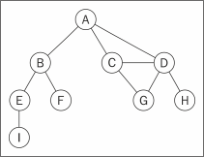
了解一下图的一些术语:
由一条边连接在一起的顶点称为相邻顶点。比如，A和B是相邻的，A和D是相邻的，A和C是相邻的，A和E不是相邻的。
一个顶点的度是其相邻顶点的数量。比如，A和其他三个顶点相连接，因此，A的度为3；E和其他两个顶点相连，因此，E的度为2。
路径是顶点v 1 , v 2 ,…,v k 的一个连续序列，其中vi 和v(i+1) 是相邻的。以上一示意图中的图为例，其中包含路径A B E I和A C D G。
简单路径要求不包含重复的顶点。举个例子，A D G是一条简单路径。除去最后一个顶点（因为它和第一个顶点是同一个顶点），环也是一个简单路径，比如A D C A（最后一个顶点重新回到A）。
如果图中不存在环，则称该图是无环的。如果图中每两个顶点间都存在路径，则该图是连通的。
有向图和无向图
图可以是无向的（边没有方向）或是有向的（有向图）。如下图所示，有向图的边有一个方向：
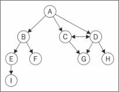
如果图中每两个顶点间在双向上都存在路径，则该图是强连通的。例如，C和D是强连通的，而A和B不是强连通的。
图还可以是未加权的或是加权的。如下图所示，加权图的边被赋予了权值：
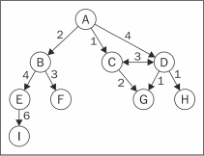
图的表示
从数据结构的角度来说，有多种方式来表示图。在所有的表示法中，不存在绝对正确的方式。图的正确表示法取决于待解决的问题和图的类型。
邻接矩阵
图最常见的实现是邻接矩阵。每个节点都和一个整数相关联，该整数将作为数组的索引。用一个二维数组来表示顶点之间的连接。如果索引为i的节点和索引为j的节点相邻，则array[i][j] === 1，否则array[i][j] === 0，如下图所示：
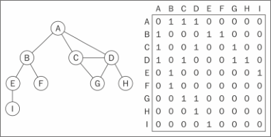
不是强连通的图（稀疏图）如果用邻接矩阵来表示，则矩阵中将会有很多0，这意味着浪费了计算机存储空间来表示根本不存在的边。例如，找给定顶点的相邻顶点，即使该顶点只有
一个相邻顶点，也不得不迭代一整行。邻接矩阵表示法不够好的另一个理由是，图中顶点的数量可能会改变，而2维数组不太灵活。
邻接表
也可以使用一种叫作邻接表的动态数据结构来表示图。邻接表由图中每个顶点的相邻顶点列表所组成。存在好几种方式来表示这种数据结构。可以用列表（数组）、链表，甚至是散列表或是字典来表示相邻顶点列表。下面的示意图展示了邻接表数据结构。
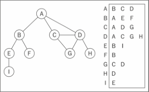
尽管邻接表可能对大多数问题来说都是更好的选择，但以上两种表示法都很有用，且它们有着不同的性质（例如，要找出顶点v和w是否相邻，使用邻接矩阵会比较快）。
关联矩阵
还可以用关联矩阵来表示图。在关联矩阵中，矩阵的行表示顶点，列表示边。如下图所示，使用二维数组来表示两者之间的连通性，如果顶点v是边e的入射点，则array[v][e] === 1；否则，array[v][e] === 0。
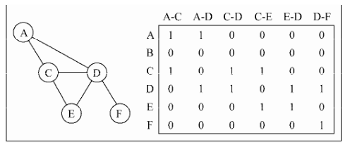
关联矩阵通常用于边的数量比顶点多的情况下，以节省空间和内存。
创建图类
声明类的骨架：1
2
3
4function Graph() {
var vertices = []; //{1}
var adjList = new Dictionary(); //{2}
}
使用一个数组来存储图中所有顶点的名字（行 {1} ），以及一个字典来存储邻接表（行 {2} ）。字典将会使用顶点的名字作为键，邻接顶点列表作为值。 vertices数组和 adjList 字典两者都是 Graph 类的私有属性。
一个方法用来向图中添加一个新的顶点（因为图实例化后是空的），另外一个方法用来添加顶点之间的边。先实现 addVertex 方法：1
2
3
4this.addVertex = function(v){
vertices.push(v); //{3}
adjList.set(v, []); //{4}
};
这个方法接受顶点 v 作为参数。将该顶点添加到顶点列表中（行 {3} ），并且在邻接表中，设置顶点 v 作为键对应的字典值为一个空数组（行 {4} ）。
现在，来实现 addEdge 方法：1
2
3
4this.addEdge = function(v, w){
adjList.get(v).push(w); //{5}
adjList.get(w).push(v); //{6}
};
这个方法接受两个顶点作为参数。首先，通过将 w 加入到 v 的邻接表中，添加了一条自顶点 v 到顶点 w 的边。如果你想实现一个有向图，则行 {5} 就足够了。
测试代码：1
2
3
4
5
6
7
8
9
10
11
12
13
14
15
16
17var graph = new Graph();
var myVertices = ['A','B','C','D','E','F','G','H','I']; //{7}
for (var i=0; i<myVertices.length; i++){ //{8}
graph.addVertex(myVertices[i]);
}
graph.addEdge('A', 'B'); //{9}
graph.addEdge('A', 'C');
graph.addEdge('A', 'D');
graph.addEdge('C', 'D');
graph.addEdge('C', 'G');
graph.addEdge('D', 'G');
graph.addEdge('D', 'H');
graph.addEdge('B', 'E');
graph.addEdge('B', 'F');
graph.addEdge('E', 'I');
为方便起见，创建了一个数组，包含所有想添加到图中的顶点（行 {7} ）。接下来，只要遍历 vertices 数组并将其中的值逐一添加到的图中（行 {8} ）。最后，添加想要的边（行 {9} ）。
为了更方便一些，让来实现一下 Graph 类的 toString 方法，以便于在控制台输出图。1
2
3
4
5
6
7
8
9
10
11
12
13
14
15
16this.toString = function(){
var s = '';
for (var i=0; i<vertices.length; i++){ //{10}
s += vertices[i] + ' -> ';
var neighbors = adjList.get(vertices[i]); //{11}
for (var j=0; j<neighbors.length; j++){ //{12}
s += neighbors[j] + ' ';
}
s += '\n'; //{13}
}
return s;
};
为邻接表表示法构建了一个字符串。首先，迭代 vertices 数组列表（行 {10} ），将顶点的名字加入字符串中。接着，取得该顶点的邻接表（行 {11} ），同样也迭代该邻接表（行 {12} ），将相邻顶点加入的字符串。邻接表迭代完成后，给的字符串添加一个换行符（行 {13} ）。
运行代码：console.log(graph.toString()); 输出如下：1
2
3
4
5
6
7
8
9A -> B C D
B -> A E F
C -> A D G
D -> A C G H
E -> B I
F -> B
G -> C D
H -> D
I -> E
从该输出中，知道顶点 A 有这几个相邻顶点： B 、 C 和 D 。
图的遍历
和树数据结构类似，可以访问图的所有节点。有两种算法可以对图进行遍历：广度优先搜索（Breadth-First Search，BFS）和深度优先搜索（Depth-First Search，DFS）。图遍历可以用来寻找特定的顶点或寻找两个顶点之间的路径，检查图是否连通，检查图是否含有环等。
图遍历算法的思想是必须追踪每个第一次访问的节点，并且追踪有哪些节点还没有被完全探索。对于两种图遍历算法，都需要明确指出第一个被访问的顶点。
完全探索一个顶点要求查看该顶点的每一条边。对于每一条边所连接的没有被访问过的顶点，将其标注为被发现的，并将其加进待访问顶点列表中。
为了保证算法的效率，务必访问每个顶点至多两次。连通图中每条边和顶点都会被访问到。
广度优先搜索算法和深度优先搜索算法基本上是相同的，只有一点不同，那就是待访问顶点列表的数据结构。
| 算 法 | 数据结构 | 描 述 |
|---|---|---|
| 深度优先搜索 | 栈 | 通过将顶点存入栈中，顶点是沿着路径被探索的，存在新的相邻顶点就去访问 |
| 广度优先搜索 | 队列 | 通过将顶点存入队列中，最先入队列的顶点先被探索 |
广度优先搜索
广度优先搜索算法会从指定的第一个顶点开始遍历图，先访问其所有的相邻点，就像一次访问图的一层。换句话说，就是先宽后深地访问顶点，如下图所示：
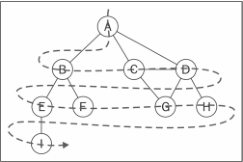
当要标注已经访问过的顶点时，用三种颜色来反映它们的状态。
- 白色：表示该顶点还没有被访问。
- 灰色：表示该顶点被访问过，但并未被探索过。
- 黑色：表示该顶点被访问过且被完全探索过。
这就是之前提到的务必访问每个顶点最多两次的原因。
以下是从顶点v开始的广度优先搜索算法所遵循的步骤。
- (1) 创建一个队列Q。
- (2) 将v标注为被发现的（灰色），并将v入队列Q。
- (3) 如果Q非空，则运行以下步骤：
- (a) 将u从Q中出队列；
- (b) 将标注u为被发现的（灰色）；
- (c) 将u所有未被访问过的邻点（白色）入队列；
- (d) 将u标注为已被探索的（黑色）。
实现广度优先搜索算法：1
2
3
4
5
6
7
8
9
10
11
12
13
14
15
16
17
18
19
20
21
22
23
24
25
26
27
28
29
30
31
32
33
34var initializeColor = function(){
var color = [];
for (var i=0; i<vertices.length; i++){
color[vertices[i]] = 'white'; //{1}
}
return color;
};
this.bfs = function(v, callback){
var color = initializeColor(), //{2}
queue = new Queue(); //{3}
queue.enqueue(v); //{4}
while (!queue.isEmpty()){ //{5}
var u = queue.dequeue(), //{6}
neighbors = adjList.get(u); //{7}
color[u] = 'grey'; // {8}
for (var i=0; i<neighbors.length; i++){ // {9}
var w = neighbors[i]; // {10}
if (color[w] === 'white'){ // {11}
color[w] = 'grey'; // {12}
queue.enqueue(w); // {13}
}
}
color[u] = 'black'; // {14}
if (callback) { // {15}
callback(u);
}
}
};
广度优先搜索和深度优先搜索都需要标注被访问过的顶点。为此，将使用一个辅助数组color 。由于当算法开始执行时，所有的顶点颜色都是白色（行 {1} ），所以可以创建一个辅助函数 initializeColor ，为这两个算法执行此初始化操作。
广度优先搜索方法的实现。要做的第一件事情是用 initializeColor函数来将 color 数组初始化为 white （行 {2} ）。还需要声明和创建一个 Queue 实例（行 {3} ），它将会存储待访问和待探索的顶点。
bfs 方法接受一个顶点作为算法的起始点。起始顶点是必要的，将此顶点入队列（行 {4} ）。
如果队列非空（行 {5} ），将通过出队列（行 {6} ）操作从队列中移除一个顶点，并取得一个包含其所有邻点的邻接表（行 {7} ）。该顶点将被标注为 grey （行 {8} ），表示发现了它（但还未完成对其的探索）。
对于u（行 {9} ）的每个邻点，取得其值（该顶点的名字——行 {10} ），如果它还未被访问过（颜色为 white ——行 {11} ），则将其标注为已经发现了它（颜色设置为 grey ——行{12} ），并将这个顶点加入队列中（行 {13} ），这样当其从队列中出列的时候，可以完成对其的探索。
当完成探索该顶点和其相邻顶点后，将该顶点标注为已探索过的（颜色设置为black ——行 {14} ）。
实现的这个 bfs 方法也接受一个回调。这个参数是可选的，如果传递了回调函数（行 {15} ），会用到它。
测试一下这个算法：1
2
3
4function printNode(value){ //{16}
console.log('Visited vertex: ' + value); //{17}
}
graph.bfs(myVertices[0], printNode); //{18}
首先，声明了一个回调函数（行 {16} ），它仅仅在浏览器控制台上输出已经被完全探索过的顶点的名字。接着，会调用 bfs 方法，给它传递第一个顶点（A——开头声明的myVertices 数组）和回调函数。
当执行这段代码时，该算法会在浏览器控制台输出下示的结果：1
2
3
4
5
6
7
8
9Visited vertex: A
Visited vertex: B
Visited vertex: C
Visited vertex: D
Visited vertex: E
Visited vertex: F
Visited vertex: G
Visited vertex: H
Visited vertex: I
使用BFS寻找最短路径
考虑如何来解决下面这个问题。
给定一个图G和源顶点v，找出对每个顶点u，u和v之间最短路径的距离（以边的数量计）。对于给定顶点v，广度优先算法会访问所有与其距离为1的顶点，接着是距离为2的顶点，以此类推。所以，可以用广度优先算法来解这个问题。可以修改 bfs 方法返回一些信息：
- 从v到u的距离d[u]；
- 前溯点pred[u]，用来推导出从v到其他顶点u的最短路径。
让来看看改进过的广度优先方法的实现：1
2
3
4
5
6
7
8
9
10
11
12
13
14
15
16
17
18
19
20
21
22
23
24
25
26
27
28
29
30
31
32
33
34
35
36this.BFS = function(v){
var color = initializeColor(),
queue = new Queue(),
d = [], //{1}
pred = []; //{2}
queue.enqueue(v);
for (var i=0; i<vertices.length; i++){ //{3}
d[vertices[i]] = 0; //{4}
pred[vertices[i]] = null; //{5}
}
while (!queue.isEmpty()){
var u = queue.dequeue(),
neighbors = adjList.get(u);
color[u] = 'grey';
for (i=0; i<neighbors.length; i++){
var w = neighbors[i];
if (color[w] === 'white'){
color[w] = 'grey';
d[w] = d[u] + 1; //{6}
pred[w] = u; //{7}
queue.enqueue(w);
}
}
color[u] = 'black';
}
return { //{8}
distances: d,
predecessors: pred
};
};
还需要声明数组 d （行 {1} ）来表示距离，以及 pred 数组来表示前溯点。下一步则是对图中的每一个顶点，用 0 来初始化数组 d （行 {4} ），用 null 来初始化数组 pred 。
当发现顶点 u 的邻点 w 时，则设置 w 的前溯点值为 u （行 {7} ）。还通过给 d[u] 加1来设置 v 和 w 之间的距离（ u 是 w 的前溯点， d[u] 的值已经有了）。方法最后返回了一个包含 d 和 pred 的对象（行 {8} ）。
现在，可以再次执行 BFS 方法，并将其返回值存在一个变量中：1
2var shortestPathA = graph.BFS(myVertices[0]);
console.log(shortestPathA);
对顶点 A 执行 BFS 方法，以下将会是输出：1
2distances: [A: 0, B: 1, C: 1, D: 1, E: 2, F: 2, G: 2, H: 2 , I: 3],
predecessors: [A: null, B: "A", C: "A", D: "A", E: "B", F: "B", G:"C", H: "D", I: "E"]
这意味着顶点 A 与顶点 B 、 C 和 D 的距离为 1 ；与顶点 E 、 F 、 G 和 H 的距离为 2 ；与顶点 I 的距离为 3 。
通过前溯点数组，可以用下面这段代码来构建从顶点 A 到其他顶点的路径：1
2
3
4
5
6
7
8
9
10
11
12
13
14
15
16
17var fromVertex = myVertices[0]; //{9}
for (var i=1; i<myVertices.length; i++){ //{10}
var toVertex = myVertices[i], //{11}
path = new Stack(); //{12}
for (var v=toVertex; v!== fromVertex; v=shortestPathA.predecessors[v]) { //{13}
path.push(v); //{14}
}
path.push(fromVertex); //{15}
var s = path.pop(); //{16}
while (!path.isEmpty()){ //{17}
s += ' - ' + path.pop(); //{18}
}
console.log(s); //{19}
}
用顶点 A 作为源顶点（行 {9} ）。对于每个其他顶点（除了顶点 A ——行 {10} ），会计算顶点 A 到它的路径。从顶点数组得到 toVertex （行 {11} ），然后会创建一个栈来存储路径值（行 {12} ）。
接着，追溯 toVertex 到 fromVertex 的路径{行 {13} }。变量 v 被赋值为其前溯点的值，这样能够反向追溯这条路径。将变量 v 添加到栈中（行 {14} ）。最后，源顶点也会被添加到栈中，以得到完整路径。
这之后，创建了一个 s 字符串，并将源顶点赋值给它（它是最后一个加入栈中的，所以它是第一个被弹出的项 ——行 {16} ）。当栈是非空的，就从栈中移出一个项并将其拼接到字符串 s 的后面（行 {18} ）。最后（行 {19} ）在控制台上输出路径。
执行该代码段，会得到如下输出：1
2
3
4
5
6
7
8A - B
A - C
A - D
A - B - E
A - B - F
A - C - G
A - D - H
A - B - E - I
这里，得到了从顶点 A 到图中其他顶点的最短路径（衡量标准是边的数量）。
深入学习最短路径算法
如果要计算加权图中的最短路径（例如，城市A和城市B之间的最短路径——GPS和Google Maps中用到的算法），广度优先搜索未必合适。
举些例子，Dijkstra’s算法解决了单源最短路径问题。Bellman–Ford算法解决了边权值为负的单源最短路径问题。A*搜索算法解决了求仅一对顶点间的最短路径问题，它用经验法则来加速搜索过程。Floyd–Warshall算法解决了求所有顶点对间的最短路径这一问题。
深度优先搜索
深度优先搜索算法将会从第一个指定的顶点开始遍历图，沿着路径直到这条路径最后一个顶点被访问了，接着原路回退并探索下一条路径。换句话说，它是先深度后广度地访问顶点，如下图所示：
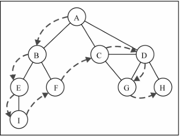
深度优先搜索算法不需要一个源顶点。在深度优先搜索算法中，若图中顶点v未访问，则访问该顶点v。
要访问顶点v，照如下步骤做。
- (1) 标注v为被发现的（灰色）。
- (2) 对于v的所有未访问的邻点w：
- (a) 访问顶点w。
- (3) 标注v为已被探索的（黑色）。
深度优先搜索的步骤是递归的，这意味着深度优先搜索算法使用栈来存储函数调用（由递归调用所创建的栈）。
深度优先算法实现：1
2
3
4
5
6
7
8
9
10
11
12
13
14
15
16
17
18
19
20
21
22
23
24this.dfs = function(callback){
var color = initializeColor(); //{1}
for (var i=0; i<vertices.length; i++){ //{2}
if (color[vertices[i]] === 'white'){ //{3}
dfsVisit(vertices[i], color, callback); //{4}
}
}
};
var dfsVisit = function(u, color, callback){
color[u] = 'grey'; //{5}
if (callback) { //{6}
callback(u);
}
var neighbors = adjList.get(u); //{7}
for (var i=0; i<neighbors.length; i++){ //{8}
var w = neighbors[i]; //{9}
if (color[w] === 'white'){ //{10}
dfsVisit(w, color, callback); //{11}
}
}
color[u] = 'black'; //{12}
};
首先，创建颜色数组（行 {1} ），并用值 white 为图中的每个顶点对其做初始化，广度优先搜索也这么做的。接着，对于图实例中每一个未被访问过的顶点（行 {2} 和 {3} ），调用私有的递归函数 dfsVisit ，传递的参数为顶点、颜色数组以及回调函数（行 {4} ）。
当访问 u 顶点时，标注其为被发现的（ grey ——行 {5} ）。如果有 callback 函数的话（行{6} ），则执行该函数输出已访问过的顶点。接下来一步是取得包含顶点 u 所有邻点的列表（行{7} ）。对于顶点 u 的每一个未被访问过（颜色为 white ——行 {10} 和行 {8} ）的邻点 w （行 {9} ），将调用 dfsVisit 函数，传递 w 和其他参数（行 {11} ——添加顶点 w 入栈，这样接下来就能访问它）。最后，在该顶点和邻点按深度访问之后，回退，意思是该顶点已被完全探索，并将其标注为 black （行 {12} ）。
让执行下面的代码段来测试一下 dfs 方法：graph.dfs(printNode); 输出如下：1
2
3
4
5
6
7
8
9Visited vertex: A
Visited vertex: B
Visited vertex: E
Visited vertex: I
Visited vertex: F
Visited vertex: C
Visited vertex: D
Visited vertex: G
Visited vertex: H
这个顺序和本节开头处示意图所展示的一致。下面这个示意图展示了该算法每一步的执行过程：
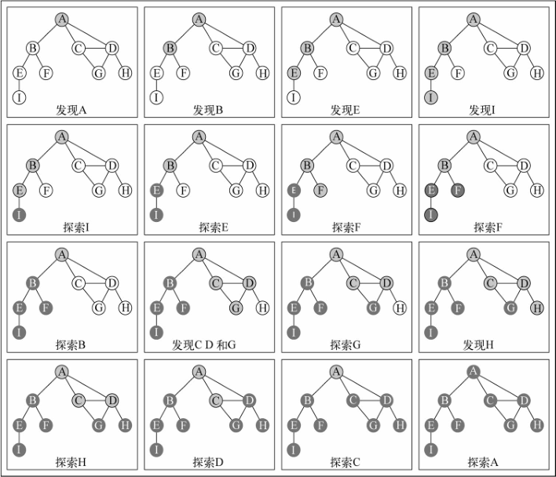
在示例所用的图中，行 {4} 只会被执行一次，因为所有其他的顶点都有路径到第一个调用 dfsVisit 函数的顶点（顶点 A ）。如果顶点 B 第一个调用函数，则行 {4} 将会为其他顶点再执行一次（比如顶点 A ）。
探索深度优先算法
对于给定的图G，希望深度优先搜索算法遍历图G的所有节点，构建“森林”（有根树的一个集合）以及一组源顶点（根），并输出两个数组：发现时间和完成探索时间。可以修改dfs 方法来返回给一些信息：
- 顶点u的发现时间d[u]；
- 当顶点u被标注为黑色时，u的完成探索时间f[u]；
- 顶点u的前溯点p[u]。
让来看看改进了的 DFS 方法的实现：1
2
3
4
5
6
7
8
9
10
11
12
13
14
15
16
17
18
19
20
21
22
23
24
25
26
27
28
29
30
31
32
33
34
35
36
37
38
39
40
41
42
43
44var time = 0; //{1}
this.DFS = function(){
var color = initializeColor(), //{2}
d = [],
f = [],
p = [];
time = 0;
for (var i=0; i<vertices.length; i++){ //{3}
f[vertices[i]] = 0;
d[vertices[i]] = 0;
p[vertices[i]] = null;
}
for (i=0; i<vertices.length; i++){
if (color[vertices[i]] === 'white'){
DFSVisit(vertices[i], color, d, f, p);
}
}
return { //{4}
discovery: d,
finished: f,
predecessors: p
};
};
var DFSVisit = function(u, color, d, f, p){
console.log('discovered ' + u);
color[u] = 'grey';
d[u] = ++time; //{5}
var neighbors = adjList.get(u);
for (var i=0; i<neighbors.length; i++){
var w = neighbors[i];
if (color[w] === 'white'){
p[w] = u; //{6}
DFSVisit(w,color, d, f, p);
}
}
color[u] = 'black';
f[u] = ++time; //{7}
console.log('explored ' + u);
};
需要一个变量来要追踪发现时间和完成探索时间（行 {1} ）。时间变量不能被作为参数传递，因为非对象的变量不能作为引用传递给其他JavaScript方法（将变量作为引用传递的意思是如果该变量在其他方法内部被修改，新值会在原始变量中反映出来）。接下来，声明数组 d 、f 和 p （行 {2} ）。需要为图的每一个顶点来初始化这些数组（行 {3} ）。在这个方法结尾处返回这些值（行 {4} ），之后要用到它们。
当一个顶点第一次被发现时，追踪其发现时间（行 {5} ）。当它是由引自顶点 u 的边而被发现的，追踪它的前溯点（行 {6} ）。最后，当这个顶点被完全探索后，追踪其完成时间（行 {7} ）。
深度优先算法背后的思想是什么？边是从最近发现的顶点u处被向外探索的。只有连接到未发现的顶点的边被探索了。当u所有的边都被探索了，该算法回退到u被发现的地方去探索其他的边。这个过程持续到发现了所有从原始顶点能够触及的顶点。如果还留有任何其他未被发现的顶点，对新源顶点重复这个过程。重复该算法，直到图中所有的顶点都被探索了。
对于改进过的深度优先搜索，有两点需要注意：
- 时间（ time ）变量值的范围只可能在图顶点数量的一倍到两倍之间；
- 对于所有的顶点 u ，d[u]<f[u]（意味着，发现时间的值比完成时间的值小，完成时间意思是所有顶点都已经被探索过了）。
在这两个假设下，有如下的规则：1 ≤ d[u] < f[u] ≤ 2|V|
如果对同一个图再跑一遍新的深度优先搜索方法，对图中每个顶点，会得到如下的 发现/完成时间：
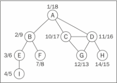
但能用这些新信息来做什么呢？
拓扑排序——使用深度优先搜索
给定下图，假定每个顶点都是一个需要去执行的任务：
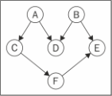
这是一个有向图，意味着任务的执行是有顺序的。例如，任务F不能在任务A之前执行。注意这个图没有环，意味着这是一个无环图。所以，可以说该图是一个有向无环图（DAG）。
当需要编排一些任务或步骤的执行顺序时，这称为拓扑排序（topological sorting，英文亦写作topsort或是toposort）。在日常生活中，这个问题在不同情形下都会出现。例如，当开始学习一门计算机科学课程，在学习某些知识之前得按顺序完成一些知识储备（你不可以在上算法I前先上算法II）。当在开发一个项目时，需要按顺序执行一些步骤，例如，首先得从客户那里得到需求，接着开发客户要求的东西，最后交付项目。你不能先交付项目再去收集需求。
拓扑排序只能应用于DAG。那么，如何使用深度优先搜索来实现拓扑排序呢？
在示意图上执行一下深度优先搜索。1
2
3
4
5
6
7
8
9
10
11
12
13graph = new Graph();
myVertices = ['A','B','C','D','E','F'];
for (i=0; i<myVertices.length; i++){
graph.addVertex(myVertices[i]);
}
graph.addEdge('A', 'C');
graph.addEdge('A', 'D');
graph.addEdge('B', 'D');
graph.addEdge('B', 'E');
graph.addEdge('C', 'F');
graph.addEdge('F', 'E');
var result = graph.DFS();
这段代码将创建图，添加边，执行改进版本的深度优先搜索算法，并将结果保存到 result 变量。下图展示了深度优先搜索算法执行后，该图的发现和完成时间。
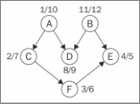
现在要做的仅仅是以倒序来排序完成时间数组，这便得出了该图的拓扑排序：B - A - D - C - F - E
注意之前的拓扑排序结果仅是多种可能性之一。如果稍微修改一下算法，就会有不同的结果，比如下面这个结果也是众多其他可能性中的一个：
A - B - C - D - F - E
完整代码
如下：1
2
3
4
5
6
7
8
9
10
11
12
13
14
15
16
17
18
19
20
21
22
23
24
25
26
27
28
29
30
31
32
33
34
35
36
37
38
39
40
41
42
43
44
45
46
47
48
49
50
51
52
53
54
55
56
57
58
59
60
61
62
63
64
65
66
67
68
69
70
71
72
73
74
75
76
77
78
79
80
81
82
83
84
85
86
87
88
89
90
91
92
93
94
95
96
97
98
99
100
101
102
103
104
105
106
107
108
109
110
111
112
113
114
115
116
117
118
119
120
121
122
123
124
125
126
127
128
129
130
131
132
133
134
135
136
137
138
139
140
141
142
143
144
145
146
147
148
149
150
151
152
153
154
155
156
157
158
159
160
161
162
163
164
165
166
167
168
169
170
171
172function Graph() {
var vertices = []; //list
var adjList = new Dictionary();
this.addVertex = function(v){
vertices.push(v);
adjList.set(v, []); //initialize adjacency list with array as well;
};
this.addEdge = function(v, w){
adjList.get(v).push(w);
//adjList.get(w).push(v); //commented to run the improved DFS with topological sorting
};
this.toString = function(){
var s = '';
for (var i=0; i<vertices.length; i++){
s += vertices[i] + ' -> ';
var neighbors = adjList.get(vertices[i]);
for (var j=0; j<neighbors.length; j++){
s += neighbors[j] + ' ';
}
s += '\n';
}
return s;
};
var initializeColor = function(){
var color = [];
for (var i=0; i<vertices.length; i++){
color[vertices[i]] = 'white';
}
return color;
};
this.bfs = function(v, callback){
var color = initializeColor(),
queue = new Queue();
queue.enqueue(v);
while (!queue.isEmpty()){
var u = queue.dequeue(),
neighbors = adjList.get(u);
color[u] = 'grey';
for (var i=0; i<neighbors.length; i++){
var w = neighbors[i];
if (color[w] === 'white'){
color[w] = 'grey';
queue.enqueue(w);
}
}
color[u] = 'black';
if (callback) {
callback(u);
}
}
};
this.dfs = function(callback){
var color = initializeColor();
for (var i=0; i<vertices.length; i++){
if (color[vertices[i]] === 'white'){
dfsVisit(vertices[i], color, callback);
}
}
};
var dfsVisit = function(u, color, callback){
color[u] = 'grey';
if (callback) {
callback(u);
}
console.log('Discovered ' + u);
var neighbors = adjList.get(u);
for (var i=0; i<neighbors.length; i++){
var w = neighbors[i];
if (color[w] === 'white'){
dfsVisit(w, color, callback);
}
}
color[u] = 'black';
console.log('explored ' + u);
};
this.BFS = function(v){
var color = initializeColor(),
queue = new Queue(),
d = [],
pred = [];
queue.enqueue(v);
for (var i=0; i<vertices.length; i++){
d[vertices[i]] = 0;
pred[vertices[i]] = null;
}
while (!queue.isEmpty()){
var u = queue.dequeue(),
neighbors = adjList.get(u);
color[u] = 'grey';
for (i=0; i<neighbors.length; i++){
var w = neighbors[i];
if (color[w] === 'white'){
color[w] = 'grey';
d[w] = d[u] + 1;
pred[w] = u;
queue.enqueue(w);
}
}
color[u] = 'black';
}
return {
distances: d,
predecessors: pred
};
};
var time = 0;
this.DFS = function(){
var color = initializeColor(),
d = [],
f = [],
p = [];
time = 0;
for (var i=0; i<vertices.length; i++){
f[vertices[i]] = 0;
d[vertices[i]] = 0;
p[vertices[i]] = null;
}
for (i=0; i<vertices.length; i++){
if (color[vertices[i]] === 'white'){
DFSVisit(vertices[i], color, d, f, p);
}
}
return {
discovery: d,
finished: f,
predecessors: p
};
};
var DFSVisit = function(u, color, d, f, p){
console.log('discovered ' + u);
color[u] = 'grey';
d[u] = ++time;
var neighbors = adjList.get(u);
for (var i=0; i<neighbors.length; i++){
var w = neighbors[i];
if (color[w] === 'white'){
p[w] = u;
DFSVisit(w,color, d, f, p);
}
}
color[u] = 'black';
f[u] = ++time;
console.log('explored ' + u);
};
}